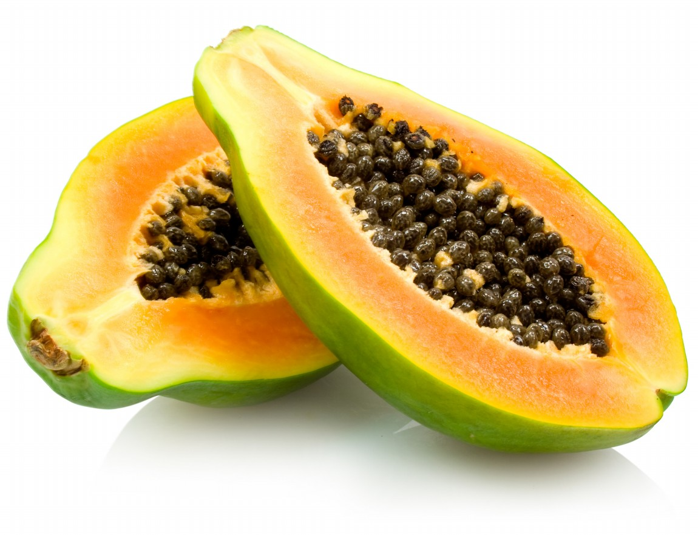

Question 2
Click for helpful hints
- originally from southern Mexico
- eaten raw, without skin or seeds
- the black seeds are sometimes ground and used as a substitute for black pepper
- a significant source of vitamin C
- ranked fourth in total tropical fruit production after bananas, oranges, and mango
Please choose the right answer:
next question